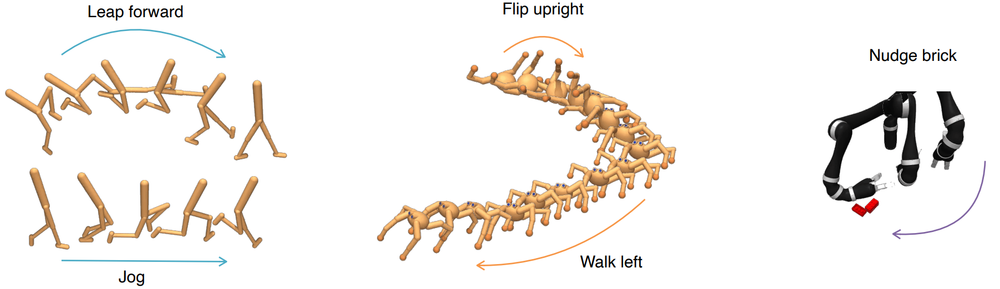

{{ page.title }}
Neural Information Processing Systems (NeurIPS 2022)
Michael Laskin (1) Hao Liu (1) Xue Bin Peng (1) Denis Yarats (2,3) Aravind Rajeswaran (3) Pieter Abbeel (1,4)
(1) University of California, Berkeley (2) New York University (3) MetaAI (4) Covariant.

|
Abstract
We introduce Contrastive Intrinsic Control (CIC), an unsupervised
reinforcement learning (RL) algorithm that maximizes the mutual
information between statetransitions and latent skill vectors.
CIC utilizes contrastive learning between state-transitions and
skills vectors to learn behaviour embeddings and maximizes the
entropy of these embeddings as an intrinsic reward to encourage
behavioural diversity. We evaluate our algorithm on the
Unsupervised RL Benchmark (URLB) in the asymptotic state-based
setting, which consists of a long reward-free pretraining phase
followed by a short adaptation phase to downstream tasks with
extrinsic rewards. We find that CIC improves over prior
exploration algorithms in terms of adaptation efficiency to
downstream tasks on state-based URLB.
|
Paper: [PDF] Webpage: [Link] Code: [GitHub] Preprint: [arXiv]
|
Bibtex
@inproceedings{
laskin2022unsupervised,
title={Unsupervised Reinforcement Learning with Contrastive Intrinsic Control},
author={Michael Laskin and Hao Liu and Xue Bin Peng and Denis Yarats and Aravind Rajeswaran and Pieter Abbeel},
booktitle={Advances in Neural Information Processing Systems},
editor={Alice H. Oh and Alekh Agarwal and Danielle Belgrave and Kyunghyun Cho},
year={2022},
url={https://openreview.net/forum?id=9HBbWAsZxFt}
}